Docker
概要
そもそもコンテナ技術の特徴とは
- 軽量な実行環境
- 高いポータビリティ
- ポータビリティとは
- コンテナイメージの軽量さとその挙動の再現性の高さ
- 業界標準仕様によるコンテナへの統一的な操作方法
- ポータビリティとは
- 巨大なエコシステム OSSがすごい. Docker, Kubernetes.
Dockerアーキテクチャ

Dockerの実行
Command
| 上流 | command(* .. 上流省略可能) | よく使うoption | 説明 |
|---|---|---|---|
| container | start* | -a/-i | コンテナを開始する |
| stop* | -t | コンテナを停止する | |
| create* | -a/-e/-i/-p/-v | Dockerイメージからコンテナを作成する | |
| run* | -d | Dockerイメージをダウンロードし、コンテナを作成して起動する。docker pull, docker create, docker start をまとめたコマンド. | |
| exec* | --name/-e/-i/-t/-p/-v | ||
| ls | = docker ps コンテナー一覧を表示する |
||
| cp* | DockerコンテナとDockerホスト間でファイルをコピーする | ||
| commit* | Dockerコンテナをイメージに変換する | ||
| rm* | Dockerコンテナを削除する | ||
| image | pull* | ||
| search | |||
| rm | =docker rmi | ||
| ls | 自分がダウンロードしたイメージ一覧を表示する | ||
| build* | Dockerイメージを作成する | ||
| volume | create | ||
| inspect | |||
| rm | |||
| network | create | ||
| inspect | ネットワークの詳細を表示する | ||
| rm | |||
| connect | コンテナをネットワークに接続する | ||
| disconnect | コンテナをネットワークから切断する | ||
| ls | ネットワークの一覧を表示する | ||
| prune | 現在コンテナがつながっていないネットワークを全て削除する |
- volume コンテナからマウントできるストレージの操作を行う。
- network Docker同士が接続するのに使う仮想的なネットワークDockerネットワークの操作を行う。
- ContainerとHost間でファイルをコピーする docker cpを使う。
Volumeのマウントに関して
2種類ある。
ボリュームマウント
DockerEngineが管理している領域内にボリュームを作成し、ディスクとして今天谷マウントします。 名前だけで管理できるので、手軽に扱える反面、ボリュームに対して、直接操作しづらいので、「仮で使いたい場合」、「滅多に触らないが、消してはいけないファイル」をおくのに使うことが多い。
| Conatiner | |
| Docker Engine | Mount |
| Host OS | NOT |
バインドマウント
DockerをインストールしたPCに存在するディレクトリをコンテナにマウントする。ファイル単位でも可能 フォルダにたいhしてファイルもおくことができる。
| Conatiner | |
| Docker Engine | NOT |
| Host OS | Mount |
docker run -v [volume名]:[PATH]
コンテナーのイメージ化
Dockerfileを作る。
Build, Ship, Run の実践
% cd dev/docker/assets/samples/myimage
% ls
% cat < hello.sh
heredoc> #!/bin/bash
heredoc> echo "Hello, World!"
heredoc> exec sleep infinity
heredoc> EOF
% chmod +x hello.sh
% cat < Dockerfile
heredoc> FROM ubuntu:20.04
heredoc> COPY ./hello.sh /hello.sh
heredoc> ENTRYPOINT [ "/hello.sh" ]
heredoc> EOF
% docker build -t myimage:v1 .
Sending build context to Docker daemon 3.072kB
Step 1/3 : FROM ubuntu:20.04
20.04: Pulling from library/ubuntu
345e3491a907: Pull complete
57671312ef6f: Pull complete
5e9250ddb7d0: Pull complete
Digest: sha256:cf31af331f38d1d7158470e095b132acd126a7180a54f263d386da88eb681d93
Status: Downloaded newer image for ubuntu:20.04
---> 7e0aa2d69a15
Step 2/3 : COPY ./hello.sh /hello.sh
---> 8a968d611aad
Step 3/3 : ENTRYPOINT [ "/hello.sh" ]
---> Running in d3a43a91fd8d
Removing intermediate container d3a43a91fd8d
---> c17a675837ad
Successfully built c17a675837ad
Successfully tagged myimage:v1
% docker run myimage:v1
Hello, World!
% docker image ls
REPOSITORY TAG IMAGE ID CREATED SIZE
myimage v1 c17a675837ad 5 minutes ago 72.7MB
% docker tag myimage:v1 szkrkr/myimage:v1
% docker push szkrkr/myimage:v1
The push refers to repository [docker.io/szkrkr/myimage]
8833c0329e1a: Pushed
2f140462f3bc: Mounted from library/ubuntu
63c99163f472: Mounted from library/ubuntu
ccdbb80308cc: Mounted from library/ubuntu
v1: digest: sha256:bfdbf07b41369ca5e0aa4929e4be4913c9ddb83ac25930027dc336d52ba733f6 size: 1150
% docker pull szkrkr/myimage:v1
v1: Pulling from szkrkr/myimage
Digest: sha256:bfdbf07b41369ca5e0aa4929e4be4913c9ddb83ac25930027dc336d52ba733f6
Status: Image is up to date for szkrkr/myimage:v1
docker.io/szkrkr/myimage:v1
% docker run szkrkr/myimage:v1
Hello, World!
docker-compoase
下記のdocker cliを一つのYAMLにまとめることができる、。
docker network create wordpress000net1
docker run --name mysql000ex11 -dit --net=wordpress000net1 -e MYSQL_ROOT_PASSWORD= MYSQL_ROOT_PASSWORD: rootpass -e MYSQL_DATABASE=wordpress000db -e MYSQL_USER=szkrkr -e MYSQL_PASSWORD=pass mysql --character-set-server=utf8mb4 --collation-server=utf8mb4_unicode_ci --default-authentication-plugin=mysql_native_password
docker run --name mysql000ex12 -dit --net=wordpress000net1 -p 8085:80 -e WORDPRESS_DB_HOST=mysql000ex11 -e WORDPRESS_DB_NAME=wordpress000db -e WORDPRESS_DB_USER=szkrkr -e WORDPRESS_DB_PASSWORD=pass wordpress
-> yml file
version: "3"
services:
mysql000ex11:
image: mysql:5.7
networks:
- wordpress000net1
volumes:
- mysql000vol11:/var/lib/mysql
restart: always
environment:
MYSQL_ROOT_PASSWORD: rootpass
MYSQL_DATABASE: wordpress000db
MYSQL_USER: szkrkr
MYSQL_PASSWORD: pass
wordpress000ex12:
depends_on:
- mysql000ex11
image: wordpress
networks:
- wordpress000net1
volumes:
- wordpress000vol12:/var/www/html
ports:
- 8085:80
restart: always
environment:
WORDPRESS_DB_HOST: mysql000ex11
WORDPRESS_DB_NAME: wordpress000db
WORDPRESS_DB_USER: szkrkr
WORDPRESS_DB_PASSWORD: pass
networks:
wordpress000net1:
volumes:
mysql000vol11:
wordpress000vol12:
コンテナイメージ
コンテナイメージ解剖
| どんなデータがで構成されているか | ファイル名 |
|---|---|
| コンテナが用いるルートファイルシステムのデータ | layer.tar |
| 実行コマンドや環境変数など、実行環境を再現するための情報 | c17a.....1144f.json |
| イメージの構成などに関する情報 | manifest.json, repositories |
| その他（過去の仕様との互換性のために保持されるファイル群) | VESION, json |
% docker save szkrkr/myimage:v1 | tar -xC ./dumpimage
% tree ./dumpimage
./dumpimage
├── 1392a7609ae8d845eba5fbe95e266a6b104d55b30262a284c960583f91307420
│ ├── VERSION
│ ├── json
│ └── layer.tar
├── 15cbe1c29902a1020a4a47c835a82f0416f1896f02fac942fdd35d326c63fa22
│ ├── VERSION
│ ├── json
│ └── layer.tar
├── 20f79c86180273e5ac0f522f4fd6a333f210784f0865dbaf020877d549bc4f8d
│ ├── VERSION
│ ├── json
│ └── layer.tar
├── 6d56becb66b184f78b25f61dc91f68fcfce4baeecb3a8dcb21ada2306091aab7
│ ├── VERSION
│ ├── json
│ └── layer.tar
├── c17a675837adfca54876833c67a451e85d0c4f502c78eae847fc52b9faa1144f.json
├── manifest.json
└── repositories
4 directories, 15 files
szkrkr@suzukirokurounoMacBook-Pro-2 myimage % tar --list -f ./dumpimage/1392a7609ae8d845eba5fbe95e266a6b104d55b30262a284c960583f91307420/layer.tar | head -n 10
run/
run/systemd/
run/systemd/.wh..wh..opq
run/systemd/container
szkrkr@suzukirokurounoMacBook-Pro-2 myimage % tar --list -f ./dumpimage/15cbe1c29902a1020a4a47c835a82f0416f1896f02fac942fdd35d326c63fa22/layer.tar | head -n 1
bin
szkrkr@suzukirokurounoMacBook-Pro-2 myimage % tar --list -f ./dumpimage/20f79c86180273e5ac0f522f4fd6a333f210784f0865dbaf020877d549bc4f8d/layer.tar | head -n 1
hello.sh
szkrkr@suzukirokurounoMacBook-Pro-2 myimage % tar --list -f ./dumpimage/6d56becb66b184f78b25f61dc91f68fcfce4baeecb3a8dcb21ada2306091aab7/layer.tar | head -n 1
etc/
レイヤとコンテナ実行
CoWを知る。 
レイヤとビルド
すでに同じイメージでビルドされている場合、キャッシュされる。
szkrkr@suzukirokurounoMacBook-Pro-2 hello % docker build -t hello:v1 .
Sending build context to Docker daemon 3.072kB
Step 1/5 : FROM ubuntu:20.04
---> 7e0aa2d69a15
Step 2/5 : RUN apt-get update
---> Running in bcc8dc051cdb
:
---> 634f8b8d5ab3
Step 3/5 : RUN apt-get install -y figlet
---> Running in f564cfbe6662
:
---> c83131622fd1
Step 4/5 : COPY ./hello.sh /hello.sh
---> ef604fed0f57
Step 5/5 : ENTRYPOINT [ "/hello.sh" ]
---> Running in a39beb43ef3a
Removing intermediate container a39beb43ef3a
---> 23f3fe28a651
Successfully built 23f3fe28a651
Successfully tagged hello:v1
szkrkr@suzukirokurounoMacBook-Pro-2 hello % docker run --rm --name=helo1 hello:v1
_ _ _ _ __ __ _ _ _
| | | | ___| | | ___ \ \ / /__ _ __| | __| | |
| |_| |/ _ \ | |/ _ \ \ \ /\ / / _ \| '__| |/ _` | |
| _ | __/ | | (_) | \ V V / (_) | | | | (_| |_|
|_| |_|\___|_|_|\___( ) \_/\_/ \___/|_| |_|\__,_(_)
szkrkr@suzukirokurounoMacBook-Pro-2 samples % cd ..
szkrkr@suzukirokurounoMacBook-Pro-2 samples % cp -r hello hello2
szkrkr@suzukirokurounoMacBook-Pro-2 samples % vi ./hello2/hello.sh
szkrkr@suzukirokurounoMacBook-Pro-2 samples % docker build -t hello:v2 ./hello2
Sending build context to Docker daemon 3.072kB
Step 1/5 : FROM ubuntu:20.04
---> 7e0aa2d69a15
Step 2/5 : RUN apt-get update
---> Using cache
---> 634f8b8d5ab3
Step 3/5 : RUN apt-get install -y figlet
---> Using cache
---> c83131622fd1
Step 4/5 : COPY ./hello.sh /hello.sh
---> 95bb577eb37f
Step 5/5 : ENTRYPOINT [ "/hello.sh" ]
---> Running in 1eba3d4fd497
Removing intermediate container 1eba3d4fd497
---> 0d1bbea0d708
Successfully built 0d1bbea0d708
Successfully tagged hello:v2
szkrkr@suzukirokurounoMacBook-Pro-2 samples % docker run --rm --name=hello2 hello:v2
___ _ __ __ _ _
|_ _| |_ \ \ / /__ _ __| | _____| |
| || __| \ \ /\ / / _ \| '__| |/ / __| |
| || |_ _ \ V V / (_) | | | <\__ \_|
|___|\__| ( ) \_/\_/ \___/|_| |_|\_\___(_)
|/
TroubleShooting
- COPY: *ではなく.を使用する
× COPY build/libs/* .
○ COPY build/libs/. .
参考: https://stackoverflow.com/questions/30215830/dockerfile-copy-keep-subdirectory-structure
- 複数Dockerfileを置く場合
Dockerfile.preparation
Dockerfile.execute
とかにする
https://stackoverflow.com/questions/27409761/docker-multiple-dockerfiles-in-project
- apk: command not found
Ubuntu なら apt-get Centos なら yum Apline では apk https://qiita.com/YumaInaura/items/57ebe9bc572af4da799a
Glosarry
- コンテナイメージ
コンテナ実行の素 - コンテナレジストリ
イメージ配布用サーバ - コンテナランタイム
Dockerなど - Build, Ship, Run
基本コンセプト - レイヤ
変更差分 - Docker クライアント docker cli など
- Docker デーモン (dockerd) コマンドからDOckerAPI経由でデーモンに指示。 イメージのpull/pushはDockerデーモンが行う。
- OCIランタイム 低レベルランタイム コンテナーの作成など